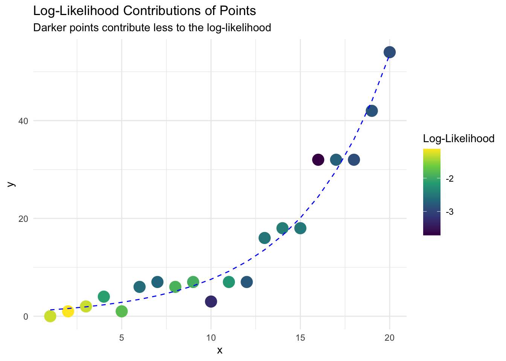
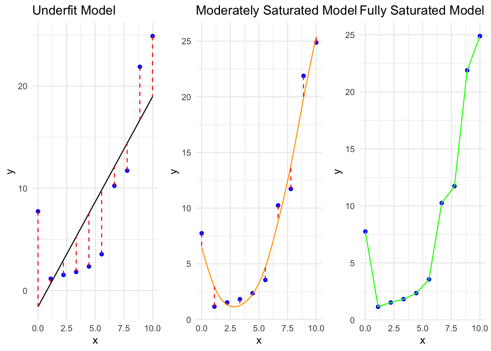

I. Modelling processes that evolve randomly over time
Welcome to the soft introduction into Poisson modelling in R!
Many things in life can be modeled with the poisson process as it quite literally models the long-term average rate of which random events occur independently. Its subjectively the most widely used model of a point process in time, and is suitable for modelling frequencies and probabilities.
Examples of events that can be modeled by the poisson distribution
The frequency of goals scored by a team in a soccer match
The probability two teams will score no goals in a soccer match
The frequency of inbound calls to a call center
The probability you receive 10 calls in one hour to a call center
The frequency of unique visitors to a website
The probability you receive 5 unique visitors to a website in 30 minutes
The frequency walk-in arrivals to a physical location (customers or patients)
The probability you receive 30 walk-in arrivals to a physical location in 2 hours.
The frequency of volcanic eruptions
The probability there will be 2 volcanic eruptions in the next 10 years.
All of these scenarios have the following in common which allow us to describe the response:
Response is discrete
Response is right skewed (but approaches a normal distribution as mu increases
Bounded between 1 and infinity.
Variance increases with the mean.
When modelling with the any distribution in R, we will follow the general format of
Choose a distribution for the response: Poisson
Choose a parameter to relate to explanatory terms: mu_i
Choose a link function: log
Choose explanatory terms (more on this later):
Additional parameters may be estimated/observed:
II. Synthesis of the poisson model
💡 Key Takeaways:
Poisson Log Link: Ensures predicted values are +ve.
Logistic Logit Link: Logit is between -inf to inf. exp() ensures predicted values are bound by 0 and 1.
Now that we’ve introduced what kinds of real-world phenomena follow a Poisson distribution, from soccer goals to volcanic eruptions, you might be wondering, “How do we actually use this knowledge to build a statistical model?”
In classical linear regression, we assume the response has an unbounded continuous range. That works fine when you’re predicting, say, someone’s income or weight. But in Poisson regression, we model counts… things like number of visitors, arrivals, or events, situations where negative values make no sense.
So, instead of the standard form: \(\mu_i = \beta_0 + \beta_1 x_i\), we apply a loglink function to ensure our expected value, \(\mu_i\), is always positive. After all, a negative number of customer walk-ins? That might get you fired 😅
🔗 Enter the Log Link
To fix this, the Poisson GLM uses a **log link function**, which transforms the expected value onto the real number line:
And because of the log transformation, we interpret coefficients multiplicatively…
The two plots below help visualize how the Poisson model transforms values using a log link. The log ensures the model stays linear on the log scale, while the exponential ensures predictions for the mean response, μ, are always positive.
The log link function transforms expected counts \(\mu\) (which must be ≥ 0) into linear predictors η on the real number line.
Code
library(tidyverse)# Plot 1: Log Link Function η = log(μ)mu <-seq(0.01, 10, length.out =500)eta_from_mu <-log(mu)df1 <-data.frame(mu = mu, eta = eta_from_mu)# Add a point to highlight transformationhighlight1 <-data.frame(mu =5, eta =log(5))ggplot(df1, aes(x = mu, y = eta)) +geom_line(color ="blue", linewidth =1) +geom_point(data = highlight1, aes(x = mu, y = eta), color ="red", size =3) +geom_segment(data = highlight1,aes(x = mu, xend = mu, y =0, yend = eta),linetype ="dashed", color ="gray" ) +geom_segment(data = highlight1,aes(x =0, xend = mu, y = eta, yend = eta),linetype ="dashed", color ="gray" ) +geom_text(data = highlight1,aes(x = mu +1.5, y = eta),label =expression(paste("η = log(", mu, ") = ", log(5))),hjust =0, size =5 ) +labs(title ="Log Link Function: η = log(μ)",x =expression(mu ~"(mean of response)"),y =expression(eta ~"(linear predictor)") ) +theme_minimal(base_size =14)
Conversely, The inverse link function (exp) transforms any linear predictor η back into a valid, positive expected count.
Code
# Plot 2: Inverse link function (exp)eta <-seq(-5, 5, length.out =500)mu_from_eta <-exp(eta)df2 <-data.frame(eta = eta, mu = mu_from_eta)# Highlight a pointhighlight2 <-data.frame(eta =1.6, mu =exp(1.6))ggplot(df2, aes(x = eta, y = mu)) +geom_line(color ="forestgreen", linewidth =1) +geom_point(data = highlight2, aes(x = eta, y = mu), color ="red", size =3) +geom_segment(data = highlight2,aes(x = eta, xend = eta, y =0, yend = mu),linetype ="dashed", color ="gray" ) +geom_segment(data = highlight2,aes(x =0, xend = eta, y = mu, yend = mu),linetype ="dashed", color ="gray" ) +geom_text(data = highlight2,aes(x = eta +0.5, y = mu),label =expression(paste("μ = exp(", eta, ") = ", round(exp(1.6), 1))),hjust =0, size =5 ) +labs(title ="Inverse Link Function: μ = exp(η)",x =expression(eta ~"(linear predictor)"),y =expression(mu ~"(mean of response)") ) +theme_minimal(base_size =14)
III. Explanatory Terms, and Interpretation
💡 Key Takeaways:
Holding all over variables constant, for every n-unit increase in X, the expected value of the response in multiplied by exp(B1)
\(\log(\mu) = \beta_0 + \beta_1 x\)
\(\mu = e^{\beta_0 + \beta_1x}\)
\(=e^{\beta_0} (e^{\beta_1})^x\)
- When \(x = 0\), the expected value equals \(\exp(\beta_0)\).
- For every one-unit increase in \(x\), the expected value of the response is multiplied by \(\exp(\beta_1)\).
- For every ten-unit increase in \(x\), the expected value of the response is multiplied by \(\exp(10 \beta_1)\).
- For every \(n\)-unit increase in \(x\), the expected value of the response is multiplied by \(\exp(n \beta_1)\).
IV. Parameter Estimation for Generalised Linear Models
💡 Key Takeaways:
GLMs: Maximise the log-likelihood
Maximum Log-Likelihood
In Generalised Linear Models (GLMs), we estimate the model's coefficients using a method called maximum likelihood estimation (MLE). The core idea is this: for any given set of candidate parameters, we can compute how likely it is that we would have observed our data, assuming those parameters are true. This is the likelihood.
If a data point lies close to the predicted curve (or line), it contributes a high likelihood—it's consistent with the model.
If it's far from the predicted values, it contributes a low likelihood—it’s inconsistent with the model.
MLE works by searching for the set of parameters (usually denoted as \(\beta\)) that maximise the likelihood function. In other words, we choose the parameters that make our observed data as likely as possible under the model. So, instead of minimising the residual sum of squares like in linear regression, we are maximising the log-likelihood in GLMs. This is particularly useful when dealing with data where assumptions of constant variance or normality don't hold (e.g. count or binary data). A better-fitting model will have a higher log-likelihood, meaning it’s more consistent with the observed data.
Note
Even though two points might look equally close to the predicted line, their likelihood contributions can still differ due to how spread out the underlying distribution is. In Poisson regression, this spread grows with the mean, so deviations are penalized more harshly when the expected value is small.
Code
set.seed(1)x <-1:20y <-rpois(20, lambda =exp(0.2* x))model <-glm(y ~ x, family =poisson())pred <-predict(model, type ="response")log_lik <-dpois(y, lambda = pred, log =TRUE)df <-data.frame(x, y, pred, log_lik)ggplot(df, aes(x, y)) +geom_point(aes(color = log_lik), size =5) +geom_line(aes(y = pred), color ="blue", linetype ="dashed") +scale_color_viridis_c(option ="virdis") +labs(title ="Log-Likelihood Contributions of Points",subtitle ="Darker points contribute less to the log-likelihood",color ="Log-Likelihood") +theme_minimal()

To calculate the likelihood function…
Calculate the probability of observing the observations response
Take the product of these probabilities
\(\ell = \log(L) = \sum_{i=1}^{n} \log \left[ f(y_i; \boldsymbol{\beta}) \right], \ where \ f(y_i; \boldsymbol{\beta}) \ is \ the \ pmf \ of \ the \ assumed \ response \ distribution\)
V. Deviance as a Goodness of Fit
💡 Key Takeaways:
Parameter estimation is achieved by minimising the deviance
1 - pchisq(residuals, df) should be large if our model is correct.
Statistical analysis does not simply end once we have fit a model. We must determine whether or not our model seems appropriate. “Goodness-of-fit” is a property that describes how well the data appears to fit the model’s assumptions. For a GLM, these assumptions are
The observations are independent.
\(g (\theta) = X \beta\) after applying the link function, the parameter of interest is a linear combination of the explanatory terms.
Each response comes from the assumed distribution.
When considering a simple GLM, we can add all sorts of explanatory terms;
Additional numeric explanatory variables
Factors via dummy variables
Non linear relationships
All of the above
But, adding explanatory terms is sometimes said to make it more “complex”, or increase its “complexity.” In consequence, increasing a models complexity will almost always
Decrease the residual sum of squares (linear regression), OR
Increase the maximised log-likelihood (GLMS).
Model Saturation
Code
library(ggplot2)library(gridExtra)library(splines)# Simulate more nonlinear dataset.seed(42)x <-seq(0, 10, length.out =10)y <-0.5* x^2-3* x +5+rnorm(10, mean =0, sd =2)df <-data.frame(x = x, y = y)# 1. Underfit model: simple linear regressionmodel_lm <-lm(y ~ x, data = df)df$y_lm <-predict(model_lm)# 2. Moderately saturated: smooth spline with lower spar (more flexible)spline_fit <-smooth.spline(df$x, df$y, spar =0.4) # lower spar for more "wiggle"x_dense <-seq(min(x), max(x), length.out =200)spline_pred <-predict(spline_fit, x_dense)df_spline <-data.frame(x = spline_pred$x, y = spline_pred$y)# 3. Fully saturated: perfect interpolationdf$y_sat <- df$y # fitted values equal observed values# Plot 1: Underfit (Linear Regression)p1 <-ggplot(df, aes(x, y)) +geom_point(color ="blue") +geom_line(aes(y = y_lm), color ="black") +geom_segment(aes(xend = x, yend = y_lm), color ="red", linetype ="dashed") +ggtitle("Underfit Model") +theme_minimal()# Plot 2: Moderately Saturated (Spline Fit)p2 <-ggplot(df, aes(x, y)) +geom_point(color ="blue") +geom_line(data = df_spline, aes(x = x, y = y), color ="orange") +geom_segment(aes(xend = x, yend =predict(spline_fit, x)$y), color ="red", linetype ="dashed") +ggtitle("Moderately Saturated Model") +theme_minimal()# Plot 3: Fully Saturated (Perfect Fit)p3 <-ggplot(df, aes(x, y)) +geom_point(color ="blue") +geom_line(aes(y = y_sat), color ="green") +ggtitle("Fully Saturated Model") +theme_minimal()# Combine the three plotsgrid.arrange(p1, p2, p3, nrow =1)

In almost all cases, the saturated model is not a sensible model as
If we were to take another sample from the population, their observations would not exhibit the exact same trend.
The exact pattern we see therefore reflects the random white noise inherent in our particular sample, and not the underlying relationship that exists in the population.
We should try avoid over fitting models, such as the saturated models, so that they only describe the underlying trends in the population, and not random noise from our sample
Source Code
---title: "Introduction to Poisson Modelling"author: "Brittany Alexandra"date: "`r Sys.Date()`"format: html: theme: cerulean toc: true toc-depth: 2 toc-location: left code-fold: true code-tools: trueeditor_options: markdown: wrap: 72---# I. Modelling processes that evolve randomly over time------------------------------------------------------------------------```{r, include= FALSE, warning= FALSE, echo= FALSE}knitr::opts_chunk$set(warning =FALSE, message =FALSE)```Welcome to the soft introduction into Poisson modelling in R!Many things in life can be modeled with the poisson process as it quiteliterally models the long-term average rate of which random events occurindependently. Its subjectively the most widely used model of a pointprocess in time, and is suitable for modelling *frequencies* and*probabilities.*<br>[Examples of events that can be modeled by the poissondistribution]{.underline}- The frequency of goals scored by a team in a soccer match- The probability two teams will score no goals in a soccer match- The frequency of inbound calls to a call center- The probability you receive 10 calls in one hour to a call center- The frequency of unique visitors to a website- The probability you receive 5 unique visitors to a website in 30 minutes- The frequency walk-in arrivals to a physical location (customers or patients)- The probability you receive 30 walk-in arrivals to a physical location in 2 hours.- The frequency of volcanic eruptions- The probability there will be 2 volcanic eruptions in the next 10 years.<br>[All of these scenarios have the following in common which allow us todescribe the response:]{.underline}- Response is discrete- Response is right skewed (but approaches a normal distribution as mu increases- Bounded between 1 and infinity.- Variance increases with the mean.<br>[When modelling with the any distribution in R, we will follow thegeneral format of]{.underline}1. Choose a distribution for the response: Poisson2. Choose a parameter to relate to explanatory terms: mu_i3. Choose a link function: log4. Choose explanatory terms (more on this later):5. Additional parameters may be estimated/observed:<br># II. Synthesis of the poisson model------------------------------------------------------------------------::: callout-note## 💡 Key Takeaways:1. **Poisson Log Link**: Ensures predicted values are +ve.2. **Logistic Logit Link**: Logit is between -inf to inf. exp() ensures predicted values are bound by 0 and 1.:::Now that we've introduced what kinds of real-world phenomena follow aPoisson distribution, from soccer goals to volcanic eruptions, you mightbe wondering, "How do we actually use this knowledge to build astatistical model?"In classical linear regression, we assume the response has an**unbounded continuous range**. That works fine when you're predicting,say, someone's income or weight. But in **Poisson regression**, we model**counts**... things like number of visitors, arrivals, or events,situations where negative values make no sense.So, instead of the standard form: $\mu_i = \beta_0 + \beta_1 x_i$, weapply a **log** **link function** to ensure our expected value, $\mu_i$,is always **positive**. After all, a negative number of customerwalk-ins? That might get you fired 😅<br>[**🔗 Enter the Log Link**]{.underline}To fix this, the Poisson GLM uses a \*\*log link function\*\*, whichtransforms the expected value onto the real number line:$\log(\mu_i) = \beta_0 + \beta_1 x_i \quad \Rightarrow \quad \mu_i = \exp(\beta_0 + \beta_1 x_i)$[This transformation has two key benefits:]{.underline}- \- $\mu_i$ can never be negative- \- The model remains linear \*\*on the log scale\*\*And because of the log transformation, we interpret coefficients**multiplicatively**...<br>The two plots below help visualize how the Poisson model transformsvalues using a **log link**. The log ensures the model stays linear onthe log scale, while the exponential ensures predictions for the meanresponse, μ, are always positive.The **log link function** transforms expected counts $\mu$ (which mustbe ≥ 0) into linear predictors η on the real number line.```{r}library(tidyverse)# Plot 1: Log Link Function η = log(μ)mu <-seq(0.01, 10, length.out =500)eta_from_mu <-log(mu)df1 <-data.frame(mu = mu, eta = eta_from_mu)# Add a point to highlight transformationhighlight1 <-data.frame(mu =5, eta =log(5))ggplot(df1, aes(x = mu, y = eta)) +geom_line(color ="blue", linewidth =1) +geom_point(data = highlight1, aes(x = mu, y = eta), color ="red", size =3) +geom_segment(data = highlight1,aes(x = mu, xend = mu, y =0, yend = eta),linetype ="dashed", color ="gray" ) +geom_segment(data = highlight1,aes(x =0, xend = mu, y = eta, yend = eta),linetype ="dashed", color ="gray" ) +geom_text(data = highlight1,aes(x = mu +1.5, y = eta),label =expression(paste("η = log(", mu, ") = ", log(5))),hjust =0, size =5 ) +labs(title ="Log Link Function: η = log(μ)",x =expression(mu ~"(mean of response)"),y =expression(eta ~"(linear predictor)") ) +theme_minimal(base_size =14)```Conversely, The **inverse link function** (exp) transforms any linearpredictor η back into a valid, positive expected count.```{r}# Plot 2: Inverse link function (exp)eta <-seq(-5, 5, length.out =500)mu_from_eta <-exp(eta)df2 <-data.frame(eta = eta, mu = mu_from_eta)# Highlight a pointhighlight2 <-data.frame(eta =1.6, mu =exp(1.6))ggplot(df2, aes(x = eta, y = mu)) +geom_line(color ="forestgreen", linewidth =1) +geom_point(data = highlight2, aes(x = eta, y = mu), color ="red", size =3) +geom_segment(data = highlight2,aes(x = eta, xend = eta, y =0, yend = mu),linetype ="dashed", color ="gray" ) +geom_segment(data = highlight2,aes(x =0, xend = eta, y = mu, yend = mu),linetype ="dashed", color ="gray" ) +geom_text(data = highlight2,aes(x = eta +0.5, y = mu),label =expression(paste("μ = exp(", eta, ") = ", round(exp(1.6), 1))),hjust =0, size =5 ) +labs(title ="Inverse Link Function: μ = exp(η)",x =expression(eta ~"(linear predictor)"),y =expression(mu ~"(mean of response)") ) +theme_minimal(base_size =14)```# III. Explanatory Terms, and Interpretation------------------------------------------------------------------------::: callout-note## 💡 Key Takeaways:Holding all over variables constant, for every n-unit increase in X, theexpected value of the response in multiplied by exp(B1):::$\log(\mu) = \beta_0 + \beta_1 x$$\mu = e^{\beta_0 + \beta_1x}$$=e^{\beta_0} (e^{\beta_1})^x$\- When $x = 0$, the expected value equals $\exp(\beta_0)$.\- For every **one-unit** increase in $x$, the expected value of theresponse is multiplied by $\exp(\beta_1)$.\- For every **ten-unit** increase in $x$, the expected value of theresponse is multiplied by $\exp(10 \beta_1)$.\- For every $n$**-unit** increase in $x$, the expected value of theresponse is multiplied by $\exp(n \beta_1)$.# IV. Parameter Estimation for Generalised Linear Models------------------------------------------------------------------------::: callout-note## 💡 Key Takeaways:GLMs: Maximise the log-likelihood:::**Maximum Log-Likelihood**In Generalised Linear Models (GLMs), we estimate the model\'scoefficients using a method called maximum likelihood estimation (MLE).The core idea is this: for any given set of candidate parameters, we cancompute how likely it is that we would have observed our data, assumingthose parameters are true. This is the **likelihood**.- If a data point lies close to the predicted curve (or line), it contributes a high likelihood---it\'s consistent with the model.- If it\'s far from the predicted values, it contributes a low likelihood---it's inconsistent with the model.<br>MLE works by searching for the set of parameters (usually denoted as$\beta$) that maximise the likelihood function. In other words, wechoose the parameters that make our observed data as likely as possibleunder the model.So, instead of minimising the residual sum of squares like in linearregression, we are maximising the log-likelihood in GLMs. This isparticularly useful when dealing with data where assumptions of constantvariance or normality don\'t hold (e.g. count or binary data).A better-fitting model will have a higher log-likelihood, meaning it'smore consistent with the observed data.::: callout-noteEven though two points might look equally close to the predicted line,their likelihood contributions can still differ due to how spread outthe underlying distribution is. In Poisson regression, this spread growswith the mean, so deviations are penalized more harshly when theexpected value is small.:::```{r}set.seed(1)x <-1:20y <-rpois(20, lambda =exp(0.2* x))model <-glm(y ~ x, family =poisson())pred <-predict(model, type ="response")log_lik <-dpois(y, lambda = pred, log =TRUE)df <-data.frame(x, y, pred, log_lik)ggplot(df, aes(x, y)) +geom_point(aes(color = log_lik), size =5) +geom_line(aes(y = pred), color ="blue", linetype ="dashed") +scale_color_viridis_c(option ="virdis") +labs(title ="Log-Likelihood Contributions of Points",subtitle ="Darker points contribute less to the log-likelihood",color ="Log-Likelihood") +theme_minimal()```[To calculate the likelihood function...]{.underline}1. Calculate the probability of observing the observations response2. Take the product of these probabilities $\ell = \log(L) = \sum_{i=1}^{n} \log \left[ f(y_i; \boldsymbol{\beta}) \right], \ where \ f(y_i; \boldsymbol{\beta}) \ is \ the \ pmf \ of \ the \ assumed \ response \ distribution$# V. Deviance as a Goodness of Fit------------------------------------------------------------------------::: callout-note## 💡 Key Takeaways:1. Parameter estimation is achieved by minimising the deviance2. The more variance, the larger the deviance.3. Increasing model complexity always decreases RSS (LR) / increases MLE (GLM)4. Ds ≤ D ≤ Dn5. 1 - pchisq(residuals, df) should be large if our model is correct.:::Statistical analysis does not simply end once we have fit a model. Wemust determine whether or not our model seems appropriate."Goodness-of-fit" is a property that describes how well the data appearsto fit the model's assumptions. For a GLM, these assumptions are1. The observations are independent.2. $g (\theta) = X \beta$ after applying the link function, the parameter of interest is a linear combination of the explanatory terms.3. Each response comes from the assumed distribution.<br>When considering a simple GLM, we can add all sorts of explanatoryterms;- Additional numeric explanatory variables- Factors via dummy variables- Non linear relationships- All of the above<br>But, adding explanatory terms is sometimes said to make it more"complex", or increase its "complexity." In consequence, increasing amodels complexity will almost always- Decrease the residual sum of squares (linear regression), OR- Increase the maximised log-likelihood (GLMS).**Model Saturation**```{r}library(ggplot2)library(gridExtra)library(splines)# Simulate more nonlinear dataset.seed(42)x <-seq(0, 10, length.out =10)y <-0.5* x^2-3* x +5+rnorm(10, mean =0, sd =2)df <-data.frame(x = x, y = y)# 1. Underfit model: simple linear regressionmodel_lm <-lm(y ~ x, data = df)df$y_lm <-predict(model_lm)# 2. Moderately saturated: smooth spline with lower spar (more flexible)spline_fit <-smooth.spline(df$x, df$y, spar =0.4) # lower spar for more "wiggle"x_dense <-seq(min(x), max(x), length.out =200)spline_pred <-predict(spline_fit, x_dense)df_spline <-data.frame(x = spline_pred$x, y = spline_pred$y)# 3. Fully saturated: perfect interpolationdf$y_sat <- df$y # fitted values equal observed values# Plot 1: Underfit (Linear Regression)p1 <-ggplot(df, aes(x, y)) +geom_point(color ="blue") +geom_line(aes(y = y_lm), color ="black") +geom_segment(aes(xend = x, yend = y_lm), color ="red", linetype ="dashed") +ggtitle("Underfit Model") +theme_minimal()# Plot 2: Moderately Saturated (Spline Fit)p2 <-ggplot(df, aes(x, y)) +geom_point(color ="blue") +geom_line(data = df_spline, aes(x = x, y = y), color ="orange") +geom_segment(aes(xend = x, yend =predict(spline_fit, x)$y), color ="red", linetype ="dashed") +ggtitle("Moderately Saturated Model") +theme_minimal()# Plot 3: Fully Saturated (Perfect Fit)p3 <-ggplot(df, aes(x, y)) +geom_point(color ="blue") +geom_line(aes(y = y_sat), color ="green") +ggtitle("Fully Saturated Model") +theme_minimal()# Combine the three plotsgrid.arrange(p1, p2, p3, nrow =1)```In almost all cases, the saturated model is not a sensible model as1. If we were to take another sample from the population, their observations would not exhibit the exact same trend.2. The exact pattern we see therefore reflects the random white noise inherent in our particular sample, and not the underlying relationship that exists in the population.3. We should try avoid over fitting models, such as the saturated models, so that they only describe the underlying trends in the population, and not random noise from our sample